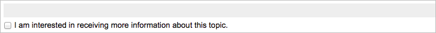
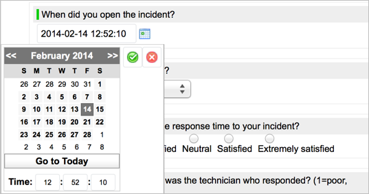
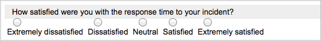
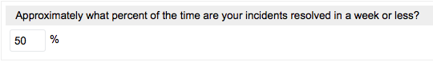

Assessment Metrics
| |
Note: This article applies to Fuji. For more current information, see Assessment Metrics at http://docs.servicenow.com
The Wiki page is no longer being updated. Please refer to http://docs.servicenow.com for the latest product documentation. |
1 Overview
In the Assessments application, a metric is a trait or value used to evaluate assessable records. Depending on the metric method, a metric can be used as either of the following:
- A question on assessment questionnaires, to obtain a subjective value such as how much people enjoy using each cell phone offered in the service catalog.
- A script that queries the database, to obtain an objective value such as the number of incidents related to each cell phone.
Each metric is associated to one metric category and can be used to evaluate assessable records for that category only. For example, the Support Rating category contains metrics that measure the quality of vendors' customer support services. One metric addresses the quality of product documentation. Others address the strength of the user community, self-service options, online training, and other support services. Each metric has a numeric weight value to indicate its importance relative to other metrics in the same category.
Assessment administrators can create and administer metrics and metric templates, which define reusable sets of answer options for metrics used as assessment questions. If you decide to use metric templates, you may want to create them before you create metrics.
| |
Note: Changes to assessment metrics and metric templates are reflected in assessment questionnaires and results, even if users have saved responses already. If possible, avoid changing the original meaning of a metric question, the data type, or any metric templates in use by existing assessments. |
2 Weighting Categories and Metrics
When you create a metric category or metric, you must specify a weight, a numeric value that indicates the importance of the category or metric relative to other categories and metrics. The greater the weight value, the more important the item is. The system uses weight values in assessment result calculations. Consider these recommendations when choosing weight values:
- Determine a weighting scale and use it consistently: In general, use a scale with a small numeric range. A standard 1-10 scale is usually appropriate, where 1 is least and 10 most important. Understand that increasing the maximum value of a weighting scale impacts all related result calculations.
- Use the same weighting scale for metric categories and metrics: Though there is no limitation, consider using the same or very similar weighting scales for both categories and metrics to make it easier to remember which values to use. A scale of 1-10 is an effective and simple weighting system, but may not be suitable for all organizations.
| |
Note: If you do not want to use weighting, set the same weight value for all categories and metrics. The default weight value is 10. |
3 Creating Metrics
After you create a category, create metrics you can use to evaluate the assessable records for that category. When you create metrics, consider the focus of the category and what characteristics you want to measure for the items you will assess. If you plan to use metrics for assessment questionnaires, you may want to review tips for writing good questions.
- Navigate to one of the following:
- Assessments > Metric Definition > Categories, open a category, and locate the Assessment Metrics related list.
- This is the suggested navigation path, as the system automatically links metrics to the category from which they are created.
- Assessments > Metric Definition > Metrics.
- Click New.
- Fill in the fields, as appropriate (see table).
- Save the record.
| |
Warning: When you create a Choice or Likert Scale question, you must reopen the Assessment Metric form after you submit it to create metric definitions. If you distribute a questionnaire without creating the answers for questions with these data types, recipients are unable to answer the questions. If the questions are mandatory, the recipients are unable to submit their questionnaires. |
Field Description Name [Required] Name of the metric. Category [Required] Metric category to which the metric belongs. The system automatically populates this category if you create a new metric from the Metric Category form. Note: You cannot change the category if the Depends on field is set or if another metric depends on this metric, starting with the Eureka release.
Method Setting that determines how to use the metric. - Assessment: Non-scripted metric. Make the metric available as a question on an assessment questionnaire. The Assessment method is compatible with all data types except Duration.
- Script: Scripted metric. Obtain values by writing a custom script. The Script method is compatible with the Duration, Number, and Percentage data types.
If you select a Data type that is incompatible with the selected Method, the system automatically changes the Method to the correct value.
Weight Numeric value that represents the importance of this metric relative to other metrics in the same category. By default, the weight is 10. For weighting suggestions, see Weighting Metrics and Metric Categories. This field is visible and required unless the Data type is Date, Date/Time, or String, starting with the Eureka release. These data types are not included in results calculations.
Order [Required] Numeric value that determines the order of the metric question on assessment questionnaires, relative to other metric questions in the same category. The metric with the smallest order value appears as the first question in the category's section. By default, the order is 100. For more information about questionnaire layout, see Completing Assessment Questionnaires. Note: It does not matter which order value you use for metrics with the Script method, as they do not appear on questionnaires.
Active Check box that determines whether this metric is used to gather assessment results. If a non-scripted metric (Assessment method) is inactive, the question does not appear on assessment questionnaires generated after the metric becomes inactive. If a scripted metric (Script method) is inactive, the script does not run. Mandatory Check box that makes the metric question mandatory (selected) or optional (cleared) on assessment questionnaires. Users cannot submit questionnaires until they provide valid responses to all mandatory questions, which are denoted by a red field status indicator. This field is visible only if the Method is Assessment, the Depends on field is empty, and the data type is not Checkbox.
Allow not applicable Check box that determines whether to include a Not Applicable answer option for this metric question on assessment questionnaires. Users can select Not Applicable if they do not have sufficient information to respond to a question or if a question does not apply to a particular assessable record. User responses of Not Applicable are excluded from results calculations. This field is visible only if the Method is Assessment and certain data types are selected.

Additional fields you can add by customizing the form Details Text field containing an HTML editor. Use this field to present important details about this metric to assessment recipients. Details can include formatted lists, images, videos, or links to external websites. General Section Question Text to use as the question on assessment questionnaires. Enter a clear, straightforward question that is easy to answer, such as How likely are you to recommend this vendor for the purchase of office supplies? Description Information about the metric and what it evaluates. If the Method is Assessment, include details that help users understand how to answer the question, as this text appears as a hint when a user points to the question text on the questionnaire. Depends on Setting used to make this metric a conditional question. Select an existing metric question from the list, which displays Checkbox, Choice, Likert Scale, Template and Yes/No metrics of the same category as this metric. Then, use the Displayed when field to set the conditions that display this metric question on questionnaires. The system prevents the creation of recursive dependencies between metrics. For example, if Metric A depends on Metric B, Metric B cannot depend on Metric A. This field is available starting with the Eureka release and is visible only if the Method is Assessment.
Displayed when Answer options for the selected Depends on metric question that, when chosen on questionnaires, display this metric question. This field is available starting with the Eureka release and is visible and required only if the Depends on field is set.
Field Type Section Data type [Required] Format of the expected response data. The function of the data type depends on the selected Method. If the method is Assessment, the data type determines how users answer the corresponding question on questionnaires. If the method is Script, the data type determines how the system calculates assessment results. Note: You cannot change the data type if another metric depends on this metric, starting with the Eureka release.
Randomize answers Check box that determines whether to present the answer options for this metric question in a random order each time a user opens an assessment questionnaire that contains the question. Answer preference is sometimes influenced by the order in which answer options appear, which can result in biased results. Randomizing answer options can help prevent this bias. This field is available starting with the Eureka release and is visible only if a data type that requires metric definitions is selected. Note: Randomizing answer options for certain questions may make those questions confusing for the person answering. In general, only randomize answer options that do not follow a logical order. For example, the following question is confusing when randomization is enabled:

Template Metric template to use for the metric question. A metric template is a set of predefined answer options. This field is visible and required only if the Data type is Template. Note: You cannot change the template if another metric depends on this metric, starting with the Eureka release.
Dependent plugin Plugin that contains the tables queried in the script. The system executes the metric script only if the plugin is active. The default available values are Asset Management, CMDB, Core, Cost Management, Procurement, and Software Asset Management. You must select a plugin if the Method is Script. This field is visible only if the Method is Script. Note: An administrator may need to add more choices of plugins to the field.
Scale definition Setting that determines whether lesser or greater numerical values equate to a good score in assessment result calculations. Select Low if lesser numerical values are better, such as for a metric that measures the number of incidents for a vendor. Select High if greater numerical values are better, such as for a metric that measures user satisfaction on a scale of one to five. The default value is High. This field is visible and required unless the Data type is Date, Date/Time, or String, starting with the Eureka release. The results for these data types are not included in results calculations. When the Scored check box is selected for an attestation, the scale value is set to High and the field is hidden, starting with the Fuji release. Note: For information about how to set the scale definition for data types that do not require you to set a numerical value, see Data Types.
Min Lowest numerical value to be used as an answer option on assessments or as a scaled value in a scripted metric. If you are using the Dublin release, ensure that the minimum value for the metric is equal to the smallest metric definition Value. This field is visible and required only if certain data types are selected.
- Eureka: The Min field is available for edit for the Number, Duration, and Percentage data types. If the data type is Choice or Likert Scale, the Min field is read-only and is set automatically based on the smallest metric definition Value.
- Fuji release: The Min field is available for edit if the data type is Number, Duration, and Percentage.
Max Highest numerical value to be used as an answer option or scaled value. If you are using the Dublin release, ensure that the maximum value for the metric is equal to the largest metric definition Value. This field is visible and required only if certain data types are selected.
- Eureka: The Max field is available for edit for the Number, Duration, and Percentage data types. If the data type is Choice or Likert Scale, the Max field is read-only and is set automatically based on the largest metric definition Value.
- Fuji release: The Max field is available for edit if the data type is Number, Duration, or Percentage.
Script Script that obtains the desired system information. For more information about using this field, see Script Method. This field is visible and required only if the Method is Script.
Scored Question that is scored by the system for an attestation. Only scored questions are considered in scoring the category results, and only scored questions are shown in the scorecard category results, history, and user results. This field is available starting with the Fuji release. Scored questions are available for these data types: - Choice
- Likert Scale
- Template
- Checkbox
- Yes/No
Select the check box to hide the Scale definition field and set the value in the field to High.
Correct answer [Required] Desired answer to a scored question for an attestation. This field is available when the Scored check box is selected and provides the appropriate selections for the data type. This field is available starting with the Fuji release. Related List Assessment Metric Definitions Lists all metric definitions, which appear as answer options for questions on assessment questionnaires. Click New to create a new metric definition. This related list is available only if the Data type is Choice or Likert Scale.


3.1 Methods
Use the Method field to specify how to use the metric. The available methods are Assessment, for non-scripted metrics, and Script, for scripted metrics. Each method serves a different function and can be used with certain data types.
3.1.1 Assessment Method
Metrics with the Method set to Assessment are called non-scripted metrics. Use each non-scripted metric to define a question for assessment questionnaires. Non-scripted metrics are useful if you want to obtain subjective data like personal opinions.
You can use the Assessment method with these Data type values:
- Checkbox, starting with the Eureka release
- Choice
- Date, starting with the Eureka release
- Date/Time, starting with the Eureka release
- Likert Scale
- Number
- Percentage
- String, starting with the Eureka release
- Template
- Yes/No, starting with the Eureka release
3.1.2 Script Method
Metrics with the Method set to Script are called scripted metrics. Use each scripted metric to define a custom script for database queries. Scripted metrics are useful if your system contains reliable data for the traits you want to evaluate.
You can use the Script method with these Data type values:
- Duration
- Number
- Percentage
Use the Script field to write JavaScript code. By default, the field contains information about available variables and an example, which you can use as the basis of your script or replace entirely:
You must use the following variables in your script:
- primary: Input variable used to access the sys_id of the record being assessed.
- actual_result: Output variable that contains the actual value for this metric. The system uses this variable to populate the Actual value field on the Metric Result form.
- For each actual_result, you must specify a corresponding scaled_result value.
- scaled_result: Output variable that contains a numerical scaled value to represent an actual value. The system uses this variable to populate the Scaled value field on the Metric Result form. Ensure the scaled values you specify are between or equal to the Min and Max values for the metric. The Scale definition field determines how the system uses the scaled value. A scale definition of Low means smaller numbers are better, such as for a metric that measures the number of incidents for a vendor. High means larger numbers are better, such as for a metric that measures user satisfaction on a scale of one to five.
Example:
The metric Number of active devices uses the script pictured below. The primary variable is used to find CIs that are associated to the vendor record being assessed. The script retrieves the actual_result, the number of CIs associated to the vendor, then calculates the correct scaled_result. The script uses a series of scaled values, from the Min to the Max value, to represent actual values. Because the Scale definition is set to High, the greatest scaled values are best, meaning a vendor associated to the most CIs scores highest. The system stores the actual and scaled values in a metric result record for the vendor.
3.2 Data Types
Metrics can measure various types of information. Data types have different functions, depending on which Method you select. The following data types are available with Assessments by default.
| Data type | Compatible methods | Description |
|---|---|---|
| Checkbox | Assessment | On questionnaires, users select a check box next to a statement or leave it cleared.
 Set the Scale definition field to High if a selected check box equates to a good score. This data type is available starting with the Eureka release. |
| Choice | Assessment | On questionnaires, users select a value from a list of custom answer options. Create a metric definition for each answer option. |
| Date | Assessment | On questionnaires, users select a date.
|
| Date/Time | Assessment | On questionnaires, users select a date and time.
 This data type is available starting with the Eureka release. |
| Duration | Script | When the script runs, the system populates the Duration value and Scaled value fields on the Metric Result form with the appropriate values from the actual_result and scaled_result variables in the metric script. |
| Likert Scale | Assessment | On questionnaires, users select a value from a custom scale of answer options. Create a metric definition for each answer option, which is represented by a radio button on the scale. A Likert scale metric that evaluates an application's ease of use might have the metric definitions Easy, Average, and Difficult.
If you want to reuse a series of answer options for multiple metrics, create a metric template and use the Template data type instead of the Likert Scale data type.  Note: This data type is called Scale in the Dublin release. |
| Number | Assessment, Script | Assessment: On questionnaires, users enter a number, starting with the Eureka release.
In the Dublin release, users select a number from a series of radio buttons. A radio button appears for each number between and including the Min and Max values. Limit the range between the minimum and maximum values, since each number renders on the assessment. Script: When the script runs, the system populates the Actual value and Scaled value fields on the Metric Result form with the appropriate values from the actual_result and scaled_result variables in the metric script. |
| Percentage | Assessment, Script | Assessment: On questionnaires, users enter a number.
 Script: When the script runs, the system populates the Actual value and Scaled value fields on the Metric Result form with the appropriate values from the actual_result and scaled_result variables in the metric script. |
| String | Assessment | On questionnaires, users enter text. The size of the string field depends on the String option you select:
This data type is available starting with the Eureka release. Note: String question responses are not included in result calculations. |
| Template | Assessment | On questionnaires, users select a value from a predefined series of answer options. There must be at least one template defined to use this data type. For a template, there is a template definition for each answer option, which is represented by a radio button. |
| Yes/No | Assessment | On questionnaires, users select Yes or No from a list.
|


3.3 Creating Metric Definitions
Metrics with Choice or Likert Scale data types must have metric definitions defined to represent answer options on questionnaires. Each metric definition appears as one answer option for a question on an assessment questionnaire. For example, a metric for the question How satisfied are you with the quality of this vendor has three metric definitions to create these answer options: Very satisfied, Somewhat satisfied, and Not at all satisfied.
- Open the metric record you want to edit.
- In the Assessment Metric Definitions related list, click New to create a new metric definition.
- Fill in the fields:
- Display: Enter the text you want to appear as the answer option.
- Value: Enter the numeric value, greater than or equal to zero, to which the answer option equates. Values are used to calculate metric results. When you view assessment questions, metric definitions appear in order from least to greatest value.
- The value must not be less than the minimum value or greater than the maximum value specified on the Assessment Metric form in the Dublin release. This is not a concern starting with the Eureka release because the system sets the minimum and maximum values according to the metric definition values.
- To prevent reporting confusion, no two metric definitions for a given metric should have the same Value. This constraint is enforced starting with the Eureka release.
- Click Submit.
3.3.1 Changing the Order of Answer Options -- Fuji or later
By default, the order of answer options in a choice list or Likert scale is established when a survey or attestation is created. The system creates an order value for each choice based on where it appears in the original list when you submit it. The choice with the lowest order number appears first, and the choice with the highest order number appears last. To change the order of metric definitions for surveys and attestations after they are created, edit the metric definition records.
- Navigate to Assessments > Metric Definition > Metrics.
- Filter the list for surveys or attestations:
- Surveys: Switch the view to Survey.
- Attestations: Change the default filter to [Type.Evaluation method] [is] [Attestation].
- Select a record for one of the types.
- In the Assessment Metric Definitions related list, configure the list to show the Order column.
- Edit the order values in the list to change the order of the choices in the survey or attestation.

4 Metric Templates
Metric templates define reusable rating scales for evaluating non-scripted metrics. Each answer option on the scale is defined as a template definition, much like a metric definition. For example, the metric template named Satisfaction contains the template definitions: Very Satisfied, Satisfied, Neutral, Dissatisfied, and Very Dissatisfied.

{kind=link}
{kind=link}
{kind=link}
{kind=link}
{kind=link}
{kind=link}
{kind=link}
{kind=link}
{kind=link}
{kind=link}
{kind=link}
{kind=link}
{kind=link}
{kind=link}
Metric templates are available for metrics that have Template as the Data type. The following metric templates are available by default.
| Name | Assessment Template Definitions |
|---|---|
| Likert 5 | Strongly Disagree, Disagree, Neutral, Agree, Strongly Agree |
| Satisfaction | Very Dissatisfied, Dissatisfied, Neutral, Satisfied, Very Satisfied |
| Frequency | Never, Seldom, Sometimes, Most of the time, All of the time |
| Amount | None, Few or little, Average amount, Many, Quite a lot |
| Size | Very Small, Small, Average, Large, Very Large |
| Quality | Very Poor, Poor, Average, Good, Very Good |
| Complexity | Very Complex, Complex, Moderate, Simple, Very Simple |
4.1 Creating Metric Templates
To create a metric template:
- Navigate to Assessments > Metric Definition > Templates.
- Click New.
- Fill in the Name field on the Assessment Metric Template form and save the record.
- Under the Assessment Template Definitions related list, click New.
- Create a template definition for each answer option you want to appear on an assessment question.
- Fill in the following fields:
- Display: Enter the text to appear as the answer option.
- Value: Enter a numeric value, equal to or greater than zero, that you want the answer option to equate to. Values are used in results calculations. When you view assessment questions that use templates, answer options appear in order from least to greatest Value.
- To prevent reporting confusion, no two template definitions for a given template should have the same Value. This constraint is enforced starting with the Eureka release.
- Click Update.
{kind=link}
4.2 Updating Metric Minimum and Maximum Values to Match Templates
For assessment results to be properly calculated, the Min and Max values of a metric that uses a template must be equal to the smallest and largest template definition Value, respectively. The system sets the Min and Max fields automatically when you create a metric of the Template data type, based on the template definition values. However, the system does not update these fields for existing metrics if you add a new template definition to a template or if you update the Value of an existing template definition. If the new Value is less than the minimum value of any metrics that use the template or greater than the maximum value, update the metrics accordingly.
To edit the minimum and maximum values for a question that has the Template data type:
- Navigate to Assessments > Metric Definition > Metrics.
- Configure the list to show the Min and Max columns.
- Run the following list filter condition: [Template] [is] [<select the template you updated>]
- Ensure the Min and Max values match the smallest and largest template definition Value for the selected template, respectively.
- If the values do not match, edit the Min and Max directly from the list.
- Note: When the data type is Template, a UI policy prevents the editing of Min and Max from the form.